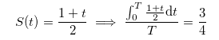

HDU4697. Convex hull
内存限制：5000/3000 MS (Java/Others)
时间限制：131072/131072 K (Java/Others)
题目描述
输入格式
输出格式
样例
样例输入
3 1 0 0 0 0 0 1 0 0 1 0 1 0
样例输出
0.750000
Hint

数据范围与提示
2013 Multi-University Training Contest 10